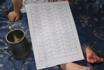
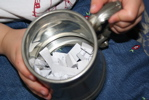

Mar 2008
Welcome One And All
Monday, 31 March 2008 Filed in: Tempest Twins
Also our old friends from: Argentina, Armenia, Australia, Austria, Belgium, Brazil, Canada, China, Cocos (Keeling) Islands, Cyprus, Czech Republic, Denmark, France, Germany, India, Ireland, Israel, Italy, Japan, Luxembourg, Mexico, Netherlands, New Zealand (Aotearoa), Norway, Poland, Portugal, Romania, Singapore, Slovak Republic, Spain, Sweden, Thailand, Tonga, Tuvalu (Polynesian Island), Ukraine, United Kingdom, Uruguay and of course the United States (Commercial, Educational and at home).
Thank you for reading our pages, contributing and sticking pins in the frappr map. Also it might be interested to know that the Tempest Twins website has had more hits from nocturn1.proboards56.com/index.cgi than www.google.co.uk/search so far this month.
Vampirates Everything
Wednesday, 26 March 2008 Filed in: Books
"---because I was bored..."
http://www.freewebs.com/vampirateseverything/index.htm
Book Award Thing At School
Saturday, 15 March 2008 Filed in: Books
From Duck's Foot Darcy
Black Heart sounds absolutely amazing!!! I can't wait for it to come out! I'm part of this book award thing at school, and we should be able to nominate the authors this time instead of adults nominating authors for us; if so I'm gonna be adamant that Justin Somper gets in and then hopefully he can win an award!!! Fingers-crossed he'll be nominated!
- I hope he does and comes to your school to receive it. Keep us posted.
Black Heart sounds absolutely amazing!!! I can't wait for it to come out! I'm part of this book award thing at school, and we should be able to nominate the authors this time instead of adults nominating authors for us; if so I'm gonna be adamant that Justin Somper gets in and then hopefully he can win an award!!! Fingers-crossed he'll be nominated!
- I hope he does and comes to your school to receive it. Keep us posted.
Letter to Sailor Quarxphonix
Friday, 14 March 2008 Filed in: Justin Somper
"Book Four is called BLACK HEART. Current plan is to publish in January 2009. A bit of a wait, I know, but the good news is that there will be an extra book in 2009. This will be a collection of the Crossing Stories, compiled by Grace through her many meetings and talks with the Vampirates.
....
By the way, vampirates.co.uk is being relaunched next month so do keep your eyes peeled. There's going to be lots more going on on the site, from in-depth character profiles to a regular blog.
Trust the tide!
Justin Somper"
Vampirates Number Four is called Black Heart
Monday, 10 March 2008 Filed in: Books
Hi guys! Tis me from the forum! Just to say I got an e-mail from Justin telling my Vampirates Number Four is called Black Heart, and is coming out around January 2009. For more info go onto the forum and see....it sounds AMAZING!
Tempest Twins Competition
Saturday, 08 March 2008 Filed in: Tempest Twins
As before I asked my pinkie Swabbie Calico Bess Flint for help. (Sorry the fourth entry was not in a decent state when she let us have it to photograph.)
First prize a signed copy of Blood Captain and a postcard of Lorcan Furey
- Won by Notorious Black Barts Daughter (Dirty Dolphin Page)
Second prize a signed Dead Deep
- Won by Magie The Vampirate (Film or TV Page)
Third prize a signed Dead Deep
- Won by Sarah The Vampire (News/Praise Page)
Fourth prize a postcard of Lorcan Furey.
- Won by Duck's Foot Darcy (Favourites Page)


Fan Trailers
Friday, 07 March 2008 Filed in: Books
Online Petition
Friday, 07 March 2008 Filed in: Books
No-name Vampirates Fan Site.
Monday, 03 March 2008 Filed in: Tempest Twins
"The website / community doesn't have a name. its down and non existent because the forum collapsed on itself, I'm going to have to find a friend to code a forum and website for me. and amongst film projects at the moment its a bit hectic.
and as for the website not changing for years, its because we said we were in the process of building a wider community since i was surprised at the amount of people joining. so we're working on expanding i guess you could say.
by the way, just call me kieran.
fair winds & goodnight
kieran"